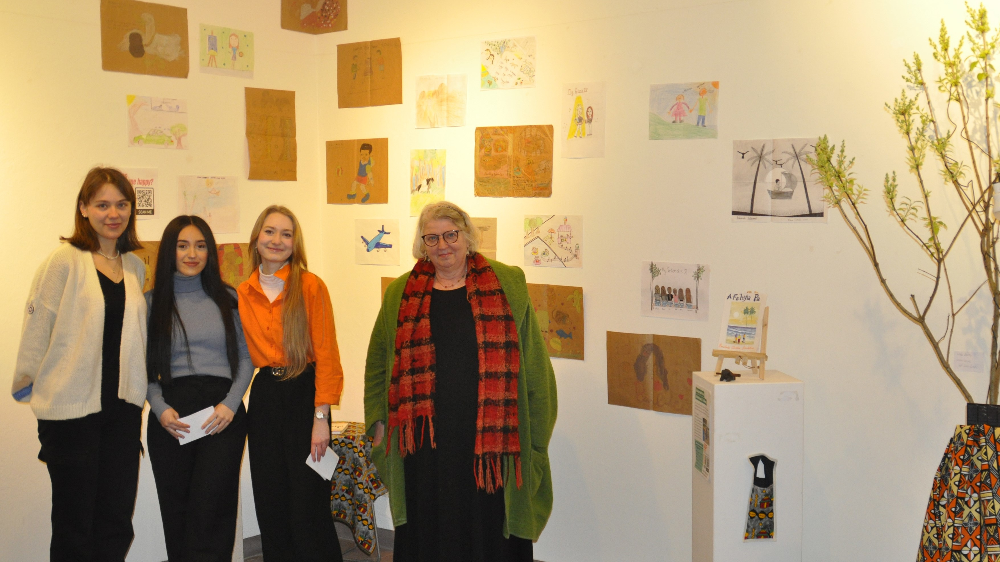

Aktuell sammeln wir alte und kaputte Kabel ein, die wir gemeinsam mit den Schweinfurter Organisationen "People4Future" und "Agenda2030" zum Recyceln geben.
Das durch diese Aktion gesammelte Geld kommt unserem Projekt, dem Bau einer Solaranlage für die St. Luke's School in Ghana, zugute.
Gerne können Sie am 13. Mai von 10- 15 Uhr Ihre kaputten Kabel auf dem Schweinfurter Marktplatz abgeben.
Diese Aktion findet im Rahmen der "Zukunftswoche Mainfranken" statt.
Aktionskunst
Im Rahmen der Ausstellung "Utopie - Freiraum Kunst" des KulturPackts hatten wir die Möglichkeit, unser Projekt auf künstlerische Weise zu präsentieren. Sowohl das Kunstprojekt mit den Bildern der 5. Klassen als auch das Solarprojekt konnten im Rathaus begutachtet werden.
Für weitere Informationen über die Philosophie "Ubuntu" verweisen wir Sie bitte auf die unten stehenden Quellen.

Die QR-Codes, die neben den Bildern platziert sind, weckten das Interesse der Besucher an unserem Projekt und führen sie zur entsprechenden Unter-Seite dieser Website.
Die Utopie hinter unserem Projekt
Unser Projekt "Unsere Energie gibt Ihnen Energie" ist von der afrikanischen Philosophie des Ubuntu inspiriert. Diese Philosophie besagt, dass unser eigenes Wohlbefinden untrennbar mit dem Wohlbefinden unserer Gemeinschaft verbunden ist.
Alltägliche Situationen wie das Essen einer Banane verdeutlichen diese Verbundenheit : Vom Anpflanzen bis zur Ernte sind jeweils zahlreiche Menschen involviert.
Entscheidend beim Ubuntu ist, dass wir als Menschen uns gegenseitig unterstützen sollten, um kollektiv ein erfülltes und glückliches Leben zu führen.
Unser Projekt setzt diese Ideen in die Tat um, indem wir gemeinsam mit unserer Partnerschule eine Solaranlage installieren.
Insgesamt zeigt unser Projekt also eine soziale und ökologische Utopie auf.
Bei der Finissage hatten wir die Gelegenheit, unser Projekt vor einem breiten Publikum zu präsentieren.